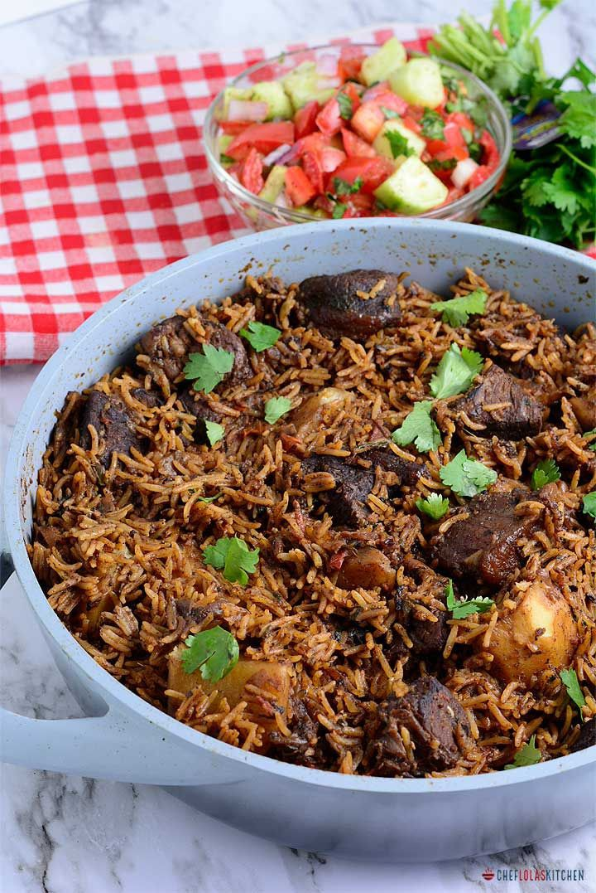
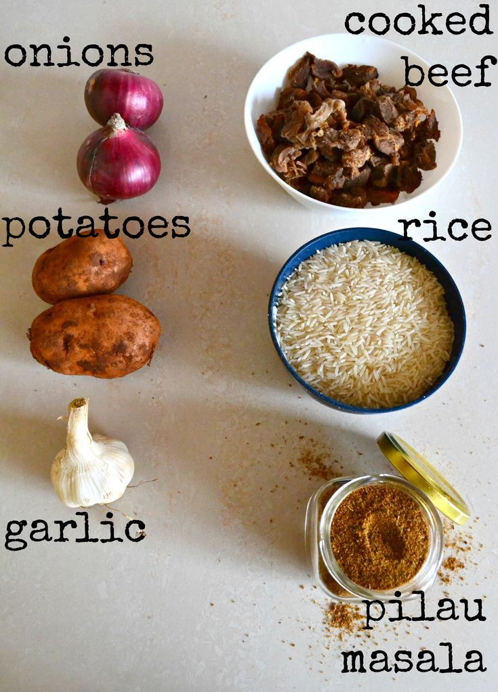

EAST AFRICAN PILAU
The East African Pilau is a traditional, beautiful fragrant rice dish made with many aromatic spices that adds an amazing depth of flavor to the rice

IINGRIDIENTS

PILAU MASALA - PILAU SPICES
- 1 stick cinnamon
- 12 pods cardamon
- 1 tablespoon cloves
- 2 tablespoon cumin seeds
- 1/2 tablespoon black peppercorn seeds
RICE PILAU
- salt to taste
- 4 cups water
- 2 bay leaves
- 2 beef stock cubes
- 2 cups basmati rice
- 1/4 cup vegetable oil
- 3 roma tomatoes diced
- 4 cloves garlic minced
- 1 lb beef sirloin cubed
- 1 tablespoon pilau masala
- 2 tablespoon ginger minced
- 1 serrano chile finely chopped
- 1/4 cup fresh cilantro roughly chopped
- 2 red onions medium size thinly sliced
- 5 potatoes medium size peeled and cut into quarters
INSTRUCTIONS
MAKE THE PILAU MASALA
- Place the cumin, black pepper, cinnamon and cloves in a dry pan
- Roast over low heat until warmed through and fragrant and blend until smooth
- You just need 1 to 11 2 tablespoons for the recipe depending on how fragrant you want the rice to be
MAKE THE RICE PILAU
- Heat a stockpot on medium high heat. Add oil and heat hot but not smoking
- Add the sliced onions and fry for 10 to 15 minutes or till they turn golden brown
- Add the garlic, ginger, serrano pepper, cook for 1 to 2 munutes unil fragrant
- Add the cubed beef, pilau masala, beef stock cubes, bay leaves, cilantro and salt.
- Cook until the meat browns and caramelizes stirring occassionaly for about 8 to 10 minutes
- Add the diced tomatoes and cook for 4 to 5 minutes until the tomatoes release their liquid
- Stir in the potatoes and the water. Bring to a boil and cook for 10 minutes
- Stir in the rice and cover lightly with a foil paper. Reduce the heat to low and cook for 20 minutes
- Once the rice is cooked and dry, remove the foil paper
- Fluff with a fork to ensure the seasonionng are well distributed all around the rice
- Serve hot with fresh kachumbari
Go back to the home page